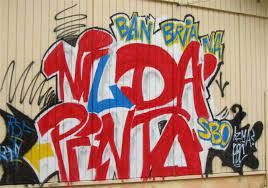
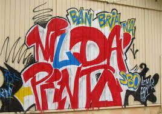
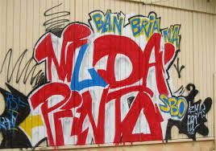

Als enige SBO-dagopleiding van het Openbaar Schoolbestuur, verzorgt Nilda Pinto SBO onderwijs aan ruim 1200 studenten. SBO staat voor: Secundair Beroepsonderwijs. Op een SBO school kan je opleidingen volgen in verschillende studierichtingen. Bij ons kan je terecht voor verschillende opleidingen op alle niveaus (1, 2, 3 en 4). Nilda Pinto SBO is verdeeld over 3 locaties. Locatie Wageningenstraat is de hoofdlocatie. Hier bieden we opleidingen aan op niveau 2, 3 en 4, in de studierichtingen Administratie, Handel, ICT, Horeca, Toerisme, Zorg & Welzijn en Dienstverlening. Locatie Lagoweg (Suffisant) biedt opleidingen aan op niveau 1. De studierichtingen die we hier aanbieden zijn Zorg & Welzijn en Horeca. Onze derde locatie is Nilda Pinto Brievengat. Opleidingen op niveau 1, 2 en 3 worden hier aangeboden in de studierichtingen Auto, Bouw, Metaal, Electro, Koudetechniek en Nautische Techniek.
